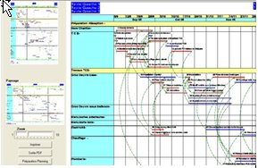
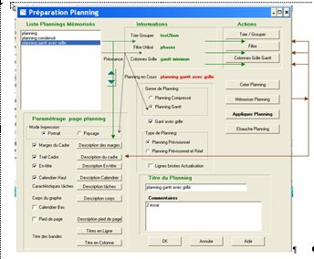
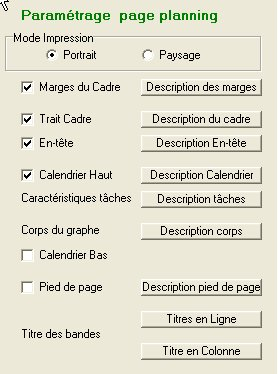
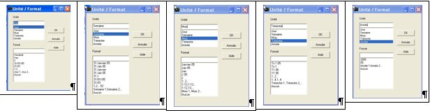
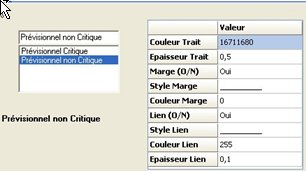
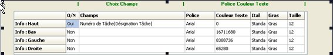
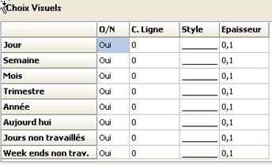
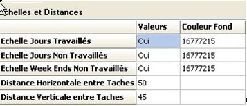

6 Impression
6.0. Configuration de l'impression
6.1 Mise au point et l'impression d'un planning
6.2 Onglets Planning
6.3 Preparation planning
6.4 Liste des plannings mémorisés
6.5 Connaître le type et le genre du planning choisi
6.6 Paramétrage extérieur du planning,
6.7 Compléter et créer un nouveau planning mémorisé
6.8 Mémoriser nouveau onglet planning
6.9 Connaître et modifier le paramétrage d'un planning sur une page
6.0. Configuration de l'impression
Vous pourrez imprimer directement un rapport ou un planning à partir d'un onglet correspondant (espace de travail).
mais utilisera par défaut la configuration d'impression du matériel utilisé
Il s'ensuit que pour une impression différente il faudra modifier la configuration d'impression du matériel utilisé
Ecoplanning 5.0 imprime en utilisant l'imprimante par défaut qui est définie dans le panneau de configuration de Windows. Si vous voulez utiliser une autre imprimante installée :
- Sélectionnez la commande "Impression" du menu "Fichier" La boîte de dialogue " Impression" apparaît :
- Déroulez la liste Choisissez vos options d'impression pour ce matériel sélectionner en particulier : l'orientation de la page, la taille etc
- Validez avec < > ou le bouton
6.1 Mise au point et l'impression d'un planning
Avec Ecoplanning on imprime un planning sur une seule page et quelle que soit le projet (Option similaire a une photographie ou la visibilité des détails est fonction de l'agrandissement choisi). Pour restez dans des caractères des tâches lisibles on choisira le format de sortie le plus adapté de A4 à A0 en fonction du matériel disponible.
A partir d'une boite de dialogue"Préparation planning" obtenue de l'un des trois onglets planning, vous obtiendrez un planning très visuel opérationnel qui va répondre à un besoin particulier.
Cette boite de dialogue, véritable tournante de la mise au point d'un planning, sera utilisée lors de la création ou de la modification des plannings mémorisés, pour tout affinage d'un planning avant son impression..
De celle-ci on aura accès aux différents traitements en particulier :
avec 'l'option " Filtres " ne visualiser que les tâches qui ont une deux voir plusieurs données identiques
- avec 'l'option " Trier Regrouper " ne classer et regrouper ces tâches entre-elles (possibilité tâches enveloppes)
- avec 'l'option " Paramétrer Colonnes " pour le choix des données des colonnes d'un planning Gantt
On aura accès aux boites de dialogue des différents traitements pour consulter les données prises en compte, s'il s'avère nécessaire, on pourra effectuer des modifications.
6.2 Onglets planning
Avec le logiciel Ecoplanning on accès à trois onglets planning dans lesquels on peut visualiser trois plannings différents.

Dans l'onglet " Planning en cours ", c'est le planning du projet en cours qui apparaît, dans " Planning 2 " et " Planning 3 " cela peut être un autre planning du projet en cours ou d'un autre projet qui est ouvert..
C'est à partir de la boite de dialogue " Préparation Planning " voir paragraphe ….que l'on pourra choisir pour chacun de ces trois onglets un planning dans la liste des plannings mémorisés voir paragraphe …...
Dans le haut de chacun des onglets apparaît les données du projet, en comparant avec les données du planning qui sera imprimé on connaîtra si un filtre à était utilisé dans le planning mémorisé employé, (dans ce cas voir s'il faire apparaître toutes les tâches du projet ou choisir une nouvelle sélection avec filtrer),. On connaîtra également la date de début et de fin du projet.
Ce planning projet donné (qui correspond au type du planning mémorisé choisi) va s'afficher à l'écran sous la forme de portrait et de paysage.
La démarche pour visualiser et examiner ce planning pleine page est la suivante :
A droite apparaît sous un format réduit en portrait et en paysage le planning total.
Attention la visualisation est limitée, (voir l'utilisation des filtres)
sous forme de planning Gantt au environ de 250 tâches
sous forme de planning comprimé au environ de 500 tâches.
La démarche pour visualiser et examiner ce planning pleine page est la suivante
Choisissez un agrandissement de 1 à 10 dans le zoom, au départ par exemple la moitie,
puis cliquez sur une partie du planning réduit (format portrait ou paysage)
Aussitôt vous verrez apparaître cette partie grossie vous pourrez l'ajuster si besoin avec le zoom.
Pour connaître son paramétrage ou pour affiner celui-ci cliquez sur la commande " Préparation Planning" vous accéderez à la boite de dialogue correspondante
Dès que la mise au point du planning vous convient vous pourrez
- demander l'impression du planning sur une page
- créer un fichier PDF de ce planning
6.3 Préparation planning
Pour accéder à la Boite de dialogue ci-dessous cliquez sur la commande " Préparation planning" de l'onglet " Saisie Prévisionnelle "ou utilisez l'option " Préparation planning" du menu " Outils "

Cette boite de dialogue a plusieurs fonctions complémentaires entre -elle :
- de pouvoir consulter la liste des plannings mémorisés d'en choisir un (article 6.4)
- de connaître le type et le genre du planning choisi, (article 6.5)
- de pouvoir accéder aux différents possibilités de paramétrage exterieur du planning, d' affiner celles-ci : Trier -Grouper tâches -Filtrer tâches -colonnes Gantt (article 6.6)
- de connaître et modifier le paramétrage de la page planning, (article 6.7)
- de compléteret créer un nouveau planning mémorisé, (article 6.8)
6.4 Liste des plannings mémorisés
Lorsqu'on charge cette boîte tous les plannings qui sont mémorisés apparaissent. Avec les flèches haute et basse on peut classer ces plannings par ordre de préséance.
Pour choisir un planning mémorisé faites défiler la liste et cliquez sur celui-ci, il apparaît en caractère gras dans cette liste. Ce planning mémorisé va s'afficher dans le planning onglet d'ou l'on a appeler cette boite de dialogue
Remarque si on modifie un planning mémorisé et que l'on le sauvegarde sous un nouveau nom celui-ci va s'inscrire au début de la liste
6.5 Options mémorisées du planning
Lors de la consultation peut connaître le genre et le type du planning mémorisé qui est choisi
- le genre du planning compressé ou d'un planning Gantt avec ou sans grille
-
planning Prévisionnel ou planning Prévisionnel et Réel avec ou sans ligne brisée
6.6 Paramétrage exterieur du planning
Si l'on désire consulter pour modifier voir créer des paramétrages extérieurs on en clique sur les commandes pour accéder aux boite de dialogues correspondantes :
- Filtrer utilisé
- Trier/Grouper utilisé
- Colonne grille Gantt
"
Dans celles-ci, si c'est nécessaire on pourra faire les modifications souhaitées, puis revenir dans la boite de dialogues " Préparation planning " pour les prendre en compte et les mémoriser
Si l'on désire consulter pour modifier voir créer des paramétrages extérieurs on en clique sur les commandes pour accéder aux boite de dialogues correspondantes :
On obtiendra ainsi un nouveau planning que l'on pourra soit conserver sous le même titre soit en créer un nouveau avec commentaires.
6.7 Compléter et créer un planning mémorisé
Vous allez pouvoir créer de nouveaux plannings pour des besoins spécifiques puis de les mémoriser pour les réutiliser.
Lors de la création d'un nouveau planning mémorisé vous allez successivement choisir en cliquant sur les options concernées à retenir du planning
Dans un premier temps choisir les options concernées du planning à créer en les cochant
- le genre du planning
soit le planning compressé (plusieurs tâches sur la même ligne)
soit planning Gantt sans grille ou avec grille des données des tâches
- le type de planning
soit le planning Prévisionnel
soit le planning Prévisionnel et Réel pour le suivi du déroulement du projet avec ligne brisée qui matérialisent les actualisations du déroulement du projet
Dans un deuxième temps choisir, vous pourrez prendre en compte
- - le paramétrage " Trier grouper " pour permettre le groupement des tâches du projet
- - si nécessaire le paramétrage " Filtrer " pour ne conserver que les tâches ayant une ou plusieurs données
- - pour un Gantt avec grille vous devrez prendre en compte le paramétrage des colonnes " Colonne grille Gantt "
Dans un dernier temps avant de mémoriser ce nouveau planning
vous devrez effectuer le paramétrage des données du planning pleine page (traits, caractères des tâches liens etc) voir ch..
Au préalable il peut être intéressant d'utilise la possibilité de dégrossir rapidement la visualisation du planning avec la commande " .................... " (voir paragraphe page ).
6.8 Mémoriser nouveau onglet planning
Si vous désirez conserver ces modifications de paramétrage vous devrez les sauvegarder en cliquant sur la commande " mémorise ". vous aurez deux possibilités :
- de le sauvegarder sous le même nom (son titre) vous pourrez cependant modifier les commentaires
- de le sauvegarder sous un autre nom avec un titre et les commentaires correspondants.
Celui-ci prendra en compte les paramétrages que vous venez dans la visualisation du planning qui va apparaître dans l'onglet, et si vous demandez son impression vous obtiendrez le planning correspondant.
Si après consultation des éléments d'un planning mémorisé vous cliquer sur appliquer, c'est ce planning qui va apparaître dans l'un des trois onglets planning à partir du quel vous avez demandé " Préparation planning "
Dans le cas de la création d'un nouveau planning mémorisé vous devrez le sauvegarder sous un nom avec un titre et les commentaires correspondants. Il va s'afficher en tête de la liste des plannings mémorisés.
li va s'afficher en tête de la liste des plannings mémorisés pour être disponible pour une nouvelle utilisation.
Il va remplacer le planning qui était affiché dans cet onglet planning.
Si après consultation des éléments d'un planning mémorisé vous cliquer sur appliquer, c'est ce planning qui va apparaître dans l'un des trois onglets planning à partir du quel vous avez demandé " Préparation planning "
6.9 Connaître et modifier le paramétrage d'un planning sur une page
Vous affinerez la visualisation du planning sur une page avec les commandes "Paramétrage page planning "
situées en bas à gauche de la boite de dialogue
Certains éléments sont optionnels, par défaut ils seront pris en compte, mais si on clique dans la case décochée ils ne le seront plus :Calendrier haut - Calendrier du bas - Pied de page

En cliquant avec la souris sur la touche des menus de chacun de ces éléments vous allez paramétrer les données
des tâches pour une visualisation correcte du planning sur une page.
6.91 Description marges d'impression
6.9.2 Description du trait cadre
6.9.3 Description du menu "En-tête"
6.9.4 Description du menu Bandes Calendrier haut et bas
6.9.5 Description du menu Caractéristiques des tâches
6.9.6 Description du menu " Corps du graphe planning "
6.9.7 Pied de page
6.9.8 Affiner titres bandes lignes " Trier-grouper
6.9.1 Description marges d'impression
Ce menu la possibilité permet de choisir les marges du planning
Vous avez de modifier la mise en page avant d'imprimer une table ou un planning dans la boite de dialogue :
- Haut : Tapez la distance entre le haut de la page et le bord supérieur de la première ligne de la page.
- Bas : Tapez la distance entre le bas de la page et le bord inférieur de la dernière ligne de la page.
- Gauche : Tapez la distance entre le bord gauche de la page et l'extrémité gauche du contenu de la page.
- Droite : Tapez la distance entre le bord droit de la page et l'extrémité droite du contenu de la page.
- Validez avec le bouton"Ok"
6.9.2 Description du trait cadre
On peut choisir pour le trait du cadre extérieur qui entour le planning :
- l'épaisseur du trait
- la couleur de ce trait
6.9.3 Description du menu "En-tête"
Ce menu permet de paramétrer le contenu de l'en-tête du planning. L'en-tête peut comporter deux lignes au milieu (titre et sous titre), trois lignes à gauche et trois lignes à droite pour des renseignements complémentaires.
On choisit les lignes que l'on désire O. Par défaut la titre qui apparaîtra en en tête sera le titre du projet. Ensuite on paramettre les données suivantes:

6.9.3.1 Police et couleur texte
6.9.3.2 Justification texte
6.9.3.3 Couleur de fond
6.9.3.4 Hauteur du texte
6.9.3.1 Police et couleur texte
Dans cette boîte de dialogue vous allez pouvoir saisir la désignation du titre et sous titres et des informations des trois emplacements de gauche et de droite.
Pour chacun, ensuite, vous pourrez choisir :En de cliquant avec la souris sur une des lignes des ces emplacements dans la colonne " emplacement " vous connaîtrez pour chacun :sa police, son style, sa taille, sa couleur.
Elle apparaît dans le carré dans les trois dernières colonnes sa justification son positionnement la hauteur de la ligne
6.9.3.2 Justification texte
Vous pourrez: préciser sa justification verticale et horizontale, modifier la hauteur de la ligne directement dans cette boite de dialogue
6.9.3.3 Couleur de fond"
Vous¨pourrez choisir couleur de fond de l'En-tête"
6.9.3.4 Hauteur du texte
Vous¨pourrez saisir la hauteur du texte"
Remarque La hauteur de l'en tête sera égale à la plus grande valeur de la hauteur cumulée: titre et sous titre lignes de gauche ? lignes de droite. Par défaut la titre qui apparaîtra en en tête sera le titre du projet
6.9.4 Description du menu Bandes Calendrier haut et bas
Ce menu permet de paramétrer le calendrier haut et bas du planning (ils sont identiques.ls peuvent avoir deux échelles par exemple (mois /semaine - semaine /jour etc )
Nota La visualisation de chacun des calendriers haut et bas est optionnelle, par défaut ils apparaissent tous les deux
vous devrez paramétrer:
Police et couleur texte
Justification texte
Couleur de fond
6.9.4 1 La commande " Unité/Format "
6.9.4 2 "Fréquence"
6.9.4 3 "Séparation verticale"
6.9.4 1 La commande " Unité/Format "
RemarqueLa démarche à exécuter, pour les deux échelles, est identique, par défaut on a les deux échelles.
SI on clique sur O que l'on a N on supprime du planning cette échelle.

Démarche on clique dans la colonnes " Unité " ou " Format " pour choisir, dans la boîte de dialogue qui s'affiche, l'unité de temps souhaitée (jour, semaine, mois, trimestre ou année).
En fonction de ce premier choix, vous devrez en faire un deuxième, par exemple choisir le format souhaité (31 jan 06, 31/1/06, etc.).
Validez avec < > ou le bouton
6.9.4 2 "Fréquence"
La fréquence est le report de la visualisation de l'unité /format retenue.
Par exemple pour une fréquence de trois, pour l'échelle semaine, vous ne visualisez qu'une semaine sur trois dans le niveau souhaité du calendrier.
Saisissez directement la valeur souhaitée dans cette boîte de dialogue
6.9.4 3 "Séparation verticale"
Vous aurez le choix ou non d'avoir un séparation verticale séparant l'unité de temps choisie (en osmose avec la fréquence) dans l'échelle correspondante elle sera en continuité avec la ligne verticale correspondante du corps du graphe, elle en aura les mêmes caractéristiques verticales
Nota Les colonnes o/n - fréquence - séparation verticale devront être ombrée)
6.9.5 Description du menu Caractéristiques des tâches
Ce menu permet d'accéder à la boite de dialogue "Description Caractéristiques des tâches".
Il permet de paramétrer
- dans la partie haute à gauche, de choisir le type de tâches du planning
- dans la partie haute à droite, les données concernant leur trait
- dans la partie basse la désignation des tâches du planning.
.
Dans un premier temps on va choisir le type des tâches concernées
- tâche critique prévisionnelle
- tâche non critique prévisionnelle
- tâche enveloppe prévisionnelle
Dans un deuxième temps pour le type des tâches concernées on va choisir
- la couleur et l'épaisseur du trait.
- si on désire d'avoir le trait de la marge totale (à la suite du trait de la tâche de la même épaisseur)
dans ce cas précisez : sa couleur, son style
- si on désire de faire apparaître le lien entre les tâches (soit critiques soit non critiques,
dans ce cas précisez son style choissez le dans boite ci-contre sa couleur l'épaisseur du trait

Dans le volet du bas vous pourrez choisir les champs des données à faire apparaître pour chacune de ces tâches
- au dessus du trait de la tâche vous pourrez faire apparaître quatre champs exemple n °-Désignation, durée, marge totale,
- au dessus du trait de la tâche vous pourrez faire apparaître un champ pas conseillé sauf pour un besoin spécifique
- à gauche du trait de la tâche vous pourrez faire apparaître un champ exemple date de début au plus tôt
- à la droite du trait de la tâche vous pourrez faire apparaître un champ exemple date de fin au plus tôt
Pour ces quatre possibilités vous saisirez la "Police et couleur texte" correspondantes
6.9.6 Description du menu " Corps du graphe planning "
Les modifications des valeurs de ces éléments ont une influence importante et directe sur la mise en page du planning sur une page.
Ce menu permet d'accéder à la boite de dialogue "Corps du graphe planning".
Il permet de paramétrer

Dans le volet du haut
Vous allez choisir les lignes verticales qui vont délimiter le déroulement du planning au niveau des échelles de temps. par exemple choisir de faire apparaître les lignes : jours semaines mois ,années.
Si on clique sur 0ui on visualise Non et on supprime la visualisation de la ligne correspondante du planning.
Ensuite on va choisir le paramétrage de chacune de ces lignes :
" la couleur de la ligne
" le style de la ligne
" l'épaisseur de la ligne
" la couleur du fond entre deux mêmes lignes

Dans le volet du bas
Vous allez choisir ou non de faire apparaître et si oui la valeur correspondante:
- des jours travaillés - des jours non travaillés - des Week-ends non travaillés
Si par exemple vous saisissez pour les week-ends et les jours non travaillés N, vous ne visualiserez que les jours travaillés
Ensuite on va choisir le paramétrage la couleur du fond de chacune des échelles.
En jouant sur la distance horizontale entre tâches pour les Plannings Condensés vous pourrez plus ou moins comprimé ou élargir ce type de planning
En jouant sur la distance verticale entre tâches pour les Plannings Condensés et Planning Gantt vous pourrez plus ou moins comprimé ou élargir ces types de planning
Les modifications des valeurs de ces éléments ont une influence importante et directe sur la mise en page du planning sur une page.
6.9.7 Pied de page
Ce menu permet de paramétrer " pied de page " du planning :.
- Première ligne à gauche
- Deuxième ligne à gauche
- Première ligne à droite
- Deuxième ligne à droite
Pour supprimer cet espace décochez la commande "Pied de page" dans la boite de dialogue " Paramétrage page planning "
6.9.8 Affiner titres bandes lignes " Trier-grouper
Vous aurez accès aux paramétrages des options du " Trier-grouper " du planning mémorisé
- titre en colonnes
- titres en bandes
Si vous cliquez sur une de ces touches vous aurez accès à la boites de dialogue correspondante (voir chapitre 5.2.5)
<